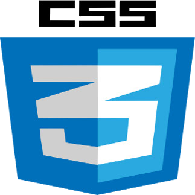

Johanna Bouzige
19 ans, Ales
permi B, vehiculé
Acceuil
Contact
GitHub
Page Facebook "JoyArt"
CV - Webdesigner, intergratrice Web, Illustratrice
Experience et formations
Brevet des colleges
A travailler en tant qu'illustratrice dans un ouvrage intituler
"Camarade entends-tu?"
de 2012 à 2013.
A participer à l'elaboration d'une
exposition
en tant que portraitiste sur la resistance en 2015.
2016-2017 pendant 6 mois, dans la formation Coda by Simplon
Webdesign / integration HTML et CSS responsive
Competences Web
Competences aquise :

Notion :
competences
Le dessins en particulier en portrait, tatouage, paysage, ( crayon, pastel, aquarelle, peinture acrylique )
Le travail manuel ( dessins, sculture, restauration de mobilier )
Je suis autonome, perfectioniste, perseverante, j'aime apprendre.
J'aime aussi travailler en equipe, la collaboration ne me fait pas peur.
Je travaile aussi sous linux et Windows (7 et 8)
Passions
L'art, le travail manuel
La science, ( nouvelle technologie )
Les jeux vidéo.
La musique.
Le web ( premier site vitrine en autodidacte en 2016 )